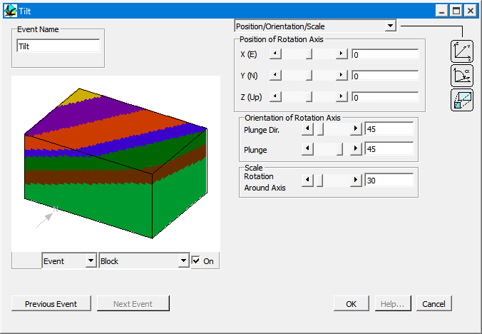
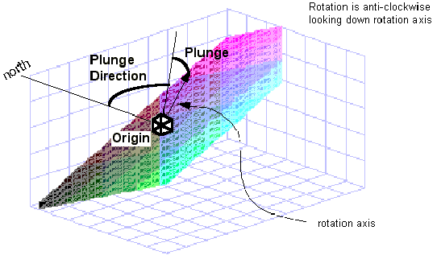

Tilt
In order to define an Tilt event, place an Tilt icon  in the History window. You will then be provided with the Tilt definition window.
in the History window. You will then be provided with the Tilt definition window.

Tilt allows arbitrary uniform rotations to be used. The rotation is defined by a rotation axis, and a rotation in degrees, anticlockwise, looking down the axis.
| GROUP | NAME | FUNCTION |
|---|---|---|
| Position | X | X position of one point on rotation axis |
| Y | Y position of one point on rotation axis | |
| Z | Z position of one point on rotation axis | |
| Orientation | Plunge Dir | Plunge Direction of rotation axis |
| Plunge | Plunge of rotation axis | |
| Scale | Rotation | Rotation in degrees around axis, anticlockwise looking down axis |

Noddy · open source under the MIT licence · Loop3D/noddy_qt